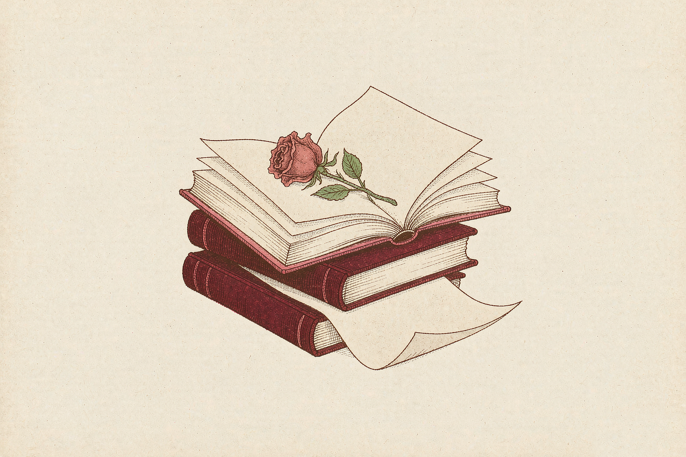

The Bell Jar
《钟形罩》——西尔维娅·普拉斯
Some books don't tell us who to become. They give language to the parts of ourselves we have not yet understood.
有些书并不急着告诉我们应该成为怎样的人。它只是替那些尚未被理解的感受，找到一种可以说出口的语言。

为什么是《钟形罩》？
二十六岁，很多问题看起来都像是选择题：要走哪条职业道路，要成为怎样的伴侣，要不要按照别人熟悉的节奏生活。可有时，真正让人疲惫的不是选项太少，而是每个选项背后都藏着一套关于“好女孩”“成功女性”和“正确人生”的标准。
普拉斯的小说写于上世纪五十年代的美国，却仍然能让今天的女性读者感到熟悉。主人公埃斯特聪明、有野心，也有很多看似光明的机会；但她逐渐发现，别人眼里的成功，并不能自动变成内心的自由。小说并不把她的困境简化成一句励志口号，而是认真描写一个人如何被期待、身份和自己的矛盾慢慢包围。
The novel is not a neat lesson in empowerment. It is a sharp, intimate portrait of a young woman trying to understand the life she is expected to want—and the life she might actually choose.
读完之后，我想留下的三个问题
01 — 我想要的，真的是我想要的吗？
我们很容易把外界的认可误认为内心的愿望。读这本书时，我更想问自己：如果没有人评价我的选择，我还会不会走向同一个方向？
02 — 为什么女性总要把自己解释得足够合理？
野心、犹豫、愤怒、暂时不想照顾任何人——这些感受常常需要被包装成一个让别人舒服的理由。但一个人并不需要时时刻刻都表现得正确、温和、值得理解，才有资格认真对待自己的生活。
03 — 成长能不能不以“变得完美”为终点？
我喜欢那些允许人物复杂的作品。人可以有能力，也可以脆弱；可以渴望独立，也会感到迷茫。成长不是把这些矛盾全部清除，而是逐渐学会面对它们，并为自己的选择承担责任。
这不是一本轻松的书
《钟形罩》涉及抑郁、心理危机和治疗经历，阅读时可能会感到压抑。它的价值不在于把痛苦浪漫化，也不在于把文学人物当作某种诊断案例，而在于它让一个年轻女性的内在经验获得了复杂、具体的表达。
我想把这本书放在这里，不是因为每个读者都必须认同埃斯特，也不是因为它能给出所有答案。只是因为有些作品提醒我们：当生活暂时无法被整理成一条清楚的路线时，我们仍然可以认真观察自己的感受，不急着用别人的标准替自己下结论。
我可以先学着分辨，哪些声音来自世界，哪些声音真正属于我。
A note from a reader, not a definitive interpretation. / 这是一位普通读者的阅读记录，不是对作品的最终解释。
关于这本书
《钟形罩》是美国诗人、作家西尔维娅·普拉斯的半自传体小说，1963年首次出版。它以埃斯特·格林伍德的经历为线索，触及女性身份、社会期待、创作野心与心理健康。作品的黑色幽默与锋利观察，也是它持续被阅读的重要原因。
The Bell Jar is Sylvia Plath's semi-autobiographical novel, first published in 1963. This page is an independent personal reading note; the book and its author remain the work of their respective rights holders.